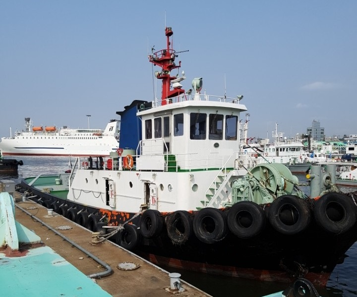

2,200 BHP 140 GRT Harbor Tug Blt 1991 Jp
/ informed by BLUE MARINE CO., LTD.
(18-217)

- BUILT : 19.03.1991 KANBARA ZOSEN K.K. HIROSHIMA JAPAN
- FLAG/CLASS : KOREA / KR, KRS0S | TUG BOAT | KRM0S
- NAVIGATION AREA : SMOOTH WATER AREA
- LOA/L/B/D : 29.50 / 27.02 X 8.40 X 3.57 m
- GRT/draft : 140 GRT / 2.600 m
- MAIN ENGINE : NIIGATA 6L 22HX / 1,100ps X 900rpm X 2set (TTL.2200ps)
- AUX ENGINE : YANMAR 6HAL-N (125ps X 2set)
- GENERATOR : 2 X AC 100KVA 225VOLT
- TANK CAPA. : FO 66.4 FW 21.8 WB 3.7 m³
- PROPULSION : Z-PELLER (ZP-1A)
- SPEED : 12.0 kt
- BOLLARD PULL : 27.970 T
- COMPLEMENT : 6 P
- LOCATION : KOREA
Information History
- 180723 : She is available for sale.
- 180313 : She is available for sale.